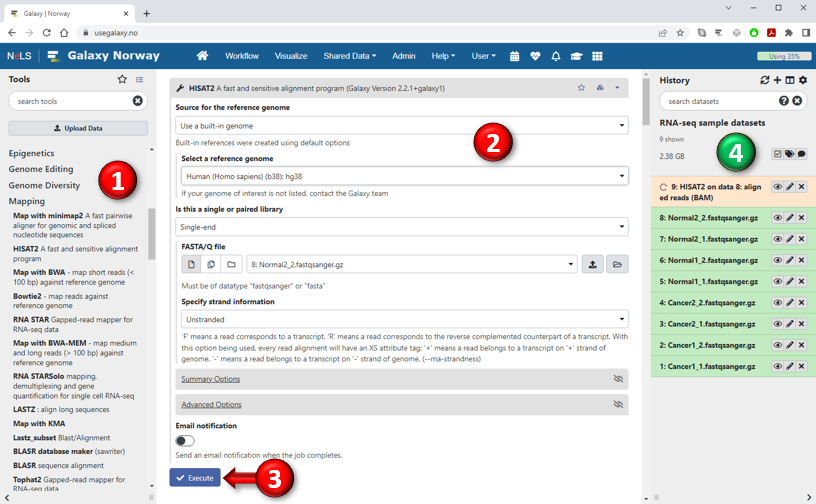
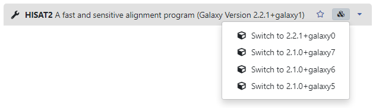

Galaxy provides users with a selection of tools that they can use to manipulate datasets and analyze data.
These tools are not necessarily a part of Galaxy per se but might have been developed by other researchers for the benefit of the scientific community
and then later on made available for use through Galaxy.
Basically any tool that can normally be run from a Unix/Linux command-line can be fitted with a graphical interface in Galaxy,
which makes Galaxy an easily extendable analysis platform. Different Galaxy servers may thus offer different types of tools depending on their focus and intended audience.
Galaxy tools can broadly be divided into two groups: those that manipulate a dataset to change it into something else —
for instance by filtering out certain rows or columns, transforming the values or converting a dataset into an entirely different format —
and those tools that merely examine and analyze the data to produce new results.
In both cases it is important to remember that a dataset is never actually changed by any tool. If you run a tool to convert a certain
dataset from GFF-format to BED-format, for instance, the results will always be output to a new dataset in your history.
This way, the original dataset will be kept intact so that you can perform other operations on it later on, but it also means that your
dataset history will contain an anti-chronological overview of all your data and you can go through the history to examine the datasets
at different stages of the analysis.

- All the tools available on the particular Galaxy server are listed in the Tools panel on the left-hand side.
The tools are grouped into sections (categories) and
you can click on a section header to show which tools it contains. You can also search for tools by name or keywords using the search box at the top of the panel.
To select a specific tool, simply click on the underlined tool link and the tool form will appear in the middle panel.
-
Once you have selected a tool, you can specify the settings of different execution parameters to control its behaviour.
Depending on your choices, the options available to you for other parameters might change and some parameters may even disappear
or reappear depending on their current relevance.
Each parameter is usually accompanied by a short description, and many tools also include more extensive documentation at the bottom of the page.
The most important parameters are the input data parameters that allow you to select which dataset(s) from your history to apply the tool to.
(These are usually, but not always, located near the top of the form).
Input data parameters are preceeded by buttons (explained below) which let you choose if you want to run with a single input dataset,
multiple inputs selected individually, or a collection of input datasets.
Note that only datasets that have the correct data format will be displayed in the form, so if a particular input parameter appears empty,
it probably means that your history contains no datasets or collections of the required type.
| Single dataset |
This is the default option for parameters that take a single dataset as input. The tool will be run once on the selected dataset and produce one set of results.
|
| Multiple datasets |
Some tools are able to take multiple datasets as input, process all of them simultaneously in the same analysis and produce one output as a result.
In this mode, the eligible datasets from the history are presented as a list, and you can choose several datasets by holding down the SHIFT or CONTROL keys
(COMMAND on Mac) while selecting.
The option to select multiple input datasets will still be available even for tools that can only process a single dataset at a time,
but the tool will then be executed in batch mode. Batch mode means that the tool is automatically run multiple times in parallel.
Each execution runs with one of the selected input datasets and produces a separate output from that input.
This is equivalent to manually running the tool multiple times with a different dataset as (single) input each time.
|
| Dataset collection |
Tools that can take multiple datasets as input may allow you to specify these as a
collection instead of individually selected datasets.
Some tools might even require you to use collections. Even if a tool can only process a single input dataset at a time,
you may still be able to provide it with a list collection to run the tool in batch mode (see above).
|
- After you have set all the required parameters to your liking, press the "Execute" button to start running the tool.
- When you press the Execute button, all the result datasets that the tool will
produce will be added to your history on the right. These datasets will at
first appear as gray boxes, which means that the job has been queued and is
awaiting execution. Galaxy is only able to run a certain number of concurrent jobs at the
same time, and if there are other jobs in front of you in the queue you will have to wait your turn.
When your time comes, the boxes turn orange which means that the job is now running.
Eventually, the job completes execution and the orange boxes will turn green to signal that
the results are finished (or, if something went wrong, the boxes will turn red). To view the results, click the eye icon behind the name of the dataset.
Reproducibility is an important aspect of scientific research. If you have run an
analysis on a dataset at one time, you should be able
to run the same analysis on the same data at a later date and get exactly the
same results as the first time, and other researchers should be able to do the same as well.
Unfortunately, as tools are updated and newer software versions are released,
this reproducibility could be compromised by modifications to the underlying computational algorithms.
Even slight changes to external libraries and dependencies utilized by the tools could lead
to differences in the eventual outcome of an analysis. To support
reproducibility as software is being continuously updated, Galaxy allows different
(legacy) versions of the same tool to be installed, and users can
decide for themselves which version they would like to use for their analyses.
When you select a tool from the Tools panel, its version number
will be displayed behind the tool name in the header at the top of the tool form page,
as seen in the image below. If there are multiple versions of the tool available,
an icon resembling "stacked cubes" will appear to the right, and you can click on
this to bring up a menu which allows you to select a different version.
Be aware, however, that the version numbers shown are internal to Galaxy, and these might not necessarily
correspond directly to the numbering used by the original developers of the tool.
